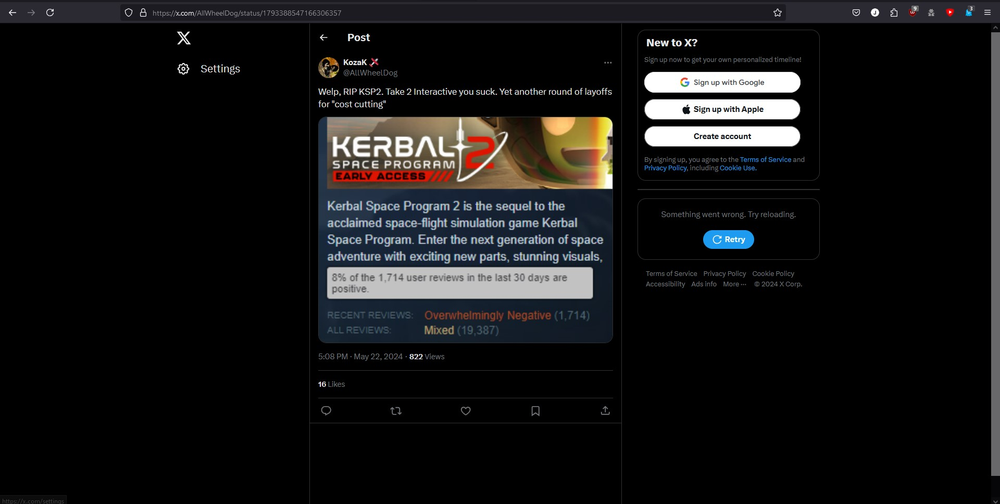

| S Tier | Kerbal Space Program | |
|---|---|---|
| A Tier | Spaceflight Simulator | |
| B Tier | Space Simulator | |
| C Tier |
N/A | |
| D Tier | Juno New Origins | |
| FAILURE Tier |
KSP 2, Simple Rockets OG |
Tiering is based on moddability, usability, the learning curve, look and feel, and bugs.
KSP 2 got FAILURE tier because Take Two scammed us and fired all the devs.

Juno New origins AKA Simple rocket's sequel got D tier because of the high learning curve and complex controls.
SFS got A tier for moddability [On PC only :c ].
Space Simulator got B tier because the last time I played it, it didn't have many crafts, but made up for it with amazing autopilot;
preventing it from going to C tier.
Futhermore, Simple Rockets 1 had no maneuvering system or anything. Meaning you had to launch and pray to God that you get an encounter with enough fuel to land.
Enough said. F TIER.
Maybe in my final, I can post a tier list of concept games (which would as of November 3rd 2024 consist of 1 entry. Not much of a list, hm?)